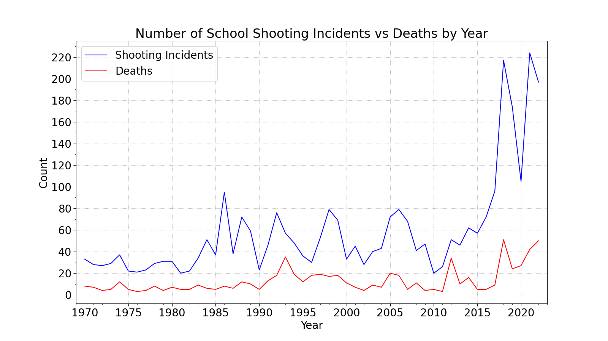

Exploring Data
Exploratory Analysis of the School Shooting Database
In order to familiarize ourselves with the data, we will now examine a series of visualizations to acquaint ourselves with the data. This will help us to raise new questions, find partial answers to introductory questions, and find directions to move forward in the project.
Clearly there is a correlation between the number of school shooting incidents and the number of deaths from school shootings. This makes sense. I am a little surprised that there isn't a dramatic increase in either deaths or incidents following the Columbine shooting in 1999. General sentiment (link to Malcolm Gladwell, other sources) seems to suggest that Columbine was a significant point by which many future school shooting incidents were inspired. In that vein, it is interesting to note that the number of school shooting incidents seems to follow a cycle of peaks and troughs lasting about 5-10 years each before drastically increasing starting in 2010. What influenced the 5-10 year cycles from 1985 to 2010? And what happened in 2010 that could have influenced the sharp increase in school shooting incidents?
I was interested to see which levels of school fall victim to school shootings most frequently. From the graph below, I find it interesting that elementary schools and high schools fall victim to shootings more than junior high / middle schools.

Exploratory Analysis of Text Data
Finally, we can see a simple wordcloud below representing the frequency of words by font size from the narratives given for each incident in the SSDB. The words are almost exactly what we would expect.